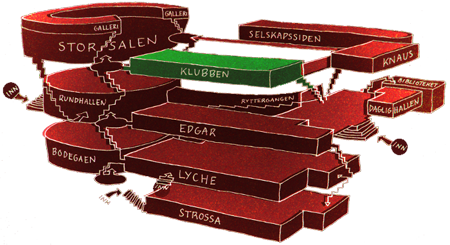

FindMyApp

Hvis Storsalen blir for upersonlig og Knaus blir for smått for deg, så er det på Klubben du finner Samfundets heteste konserter. Scenen er perfekt for intime og direkte, men likevel storartete konsertopplevelser. Det kan ligge rock, svette og øl i luften, men det er ikke kun gitarmusikk man får servert her. Her er det er varierte artister som spiller både indie, elektronika, hip-hop og annen musikk med trøkk i. I tillegg snurrer våre dyktige DJer alltid de passende platene som gjør pilsen før og etter konserten ekstra smakelig. På hverdagene er Klubben alt fra Excenteraften og Bokstavlig talt, til åstedet for Café NordSør-møter, og møtelokalet til Studenttinget.
Visste du at?
- Insert funfact here!